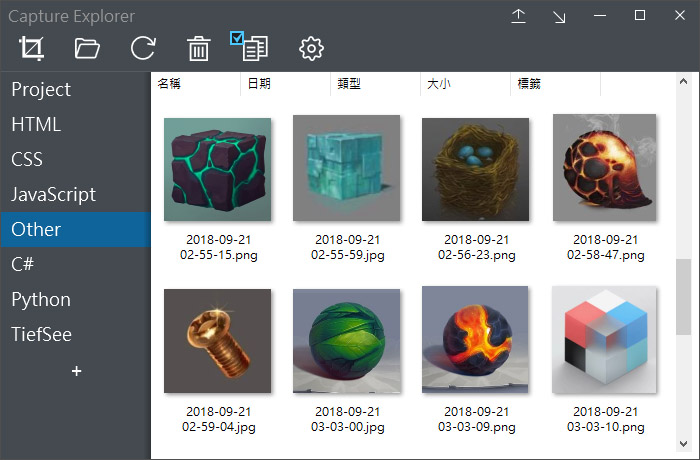
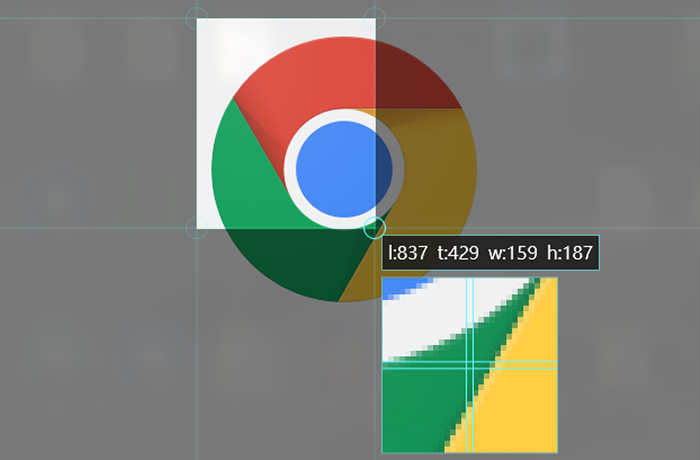
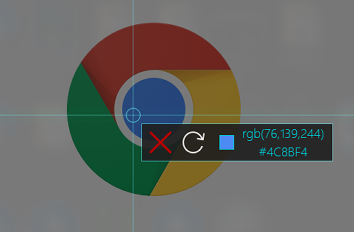
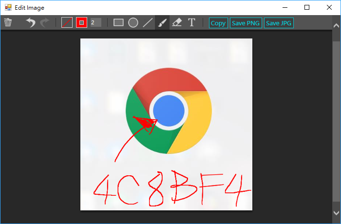

Capture Explorer (截圖總管)
輕巧免安裝的開源截圖軟體，解壓縮後不到0.5M
簡約直覺的界面，沒有任何意義不明的功能
使用資料夾來分類您的截圖，再也不用事後整理圖片
直接將圖片圖片拖曳至瀏覽器進行上傳

特色功能
拖曳上傳
直接將檔案拖曳至瀏覽器進行上傳
拖曳開啟
直接將檔案拖曳進影像編輯軟體進行開啟

精準截圖
及時顯示精準坐標與選取範圍
並用放大鏡顯示出每個像素點
並用放大鏡顯示出每個像素點

滴管工具
截圖範圍僅有1像素時，會自動變成滴管工具
可複製成 RGB 或 Hex 格式
可複製成 RGB 或 Hex 格式
視窗固定
讓視窗不會跑到其他程式後面
協助完成各種複雜操作
協助完成各種複雜操作

編輯模式
截圖後可進入編輯模式進行簡易的圖片處理
更新曆史
2.0.3
- 進入選取截圖時，支援更多快速鍵
- 新增正方形選取
- 新增單層儲存路徑
2.0.2
- 新增目前視窗截圖
- 新增自定儲存路徑
- 新增放大鏡功能
2.0.1
- 新增全螢幕截圖
- 修正截圖會重複啟用的BUG
2.0.0
- 新增資料夾分頁管理
- 新增編輯模式
- 新增縮小至工作列圖示
- 新增截圖坐標
- 新增吸取顏色
- 修改為AERO毛玻璃界面
- 修正截圖範圍有1px誤差的BUG
- 修正關閉程式後出現錯誤訊息的BUG
1.1.1
- 修正某些電腦會錯位的BUG
- 修正某些電腦無法截取多螢幕的BUG
- 優化界面
初版
關於